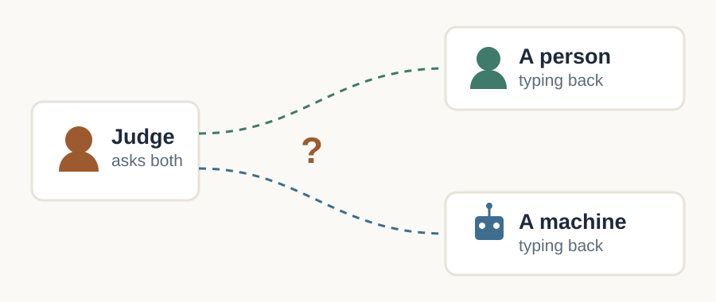
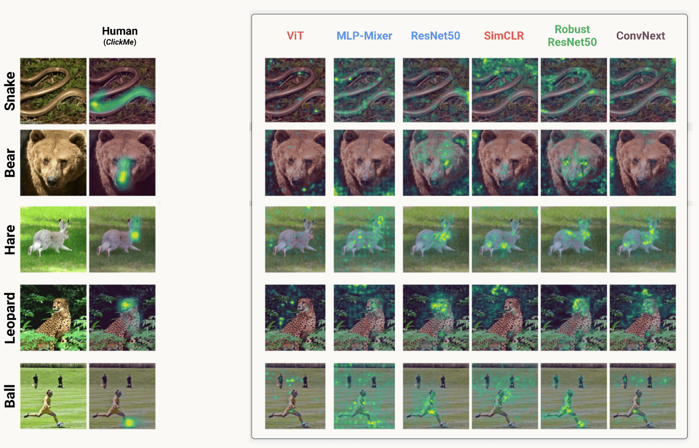
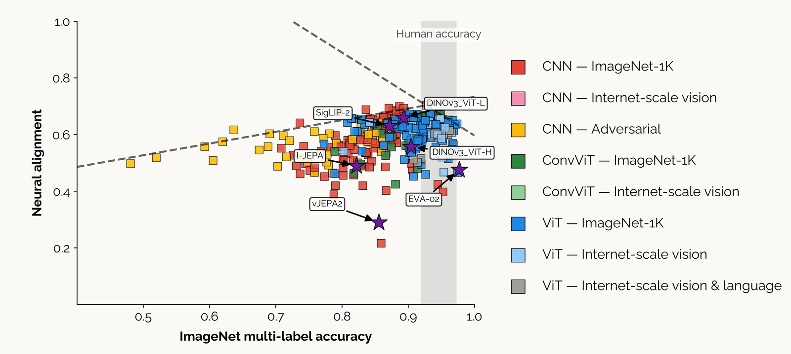
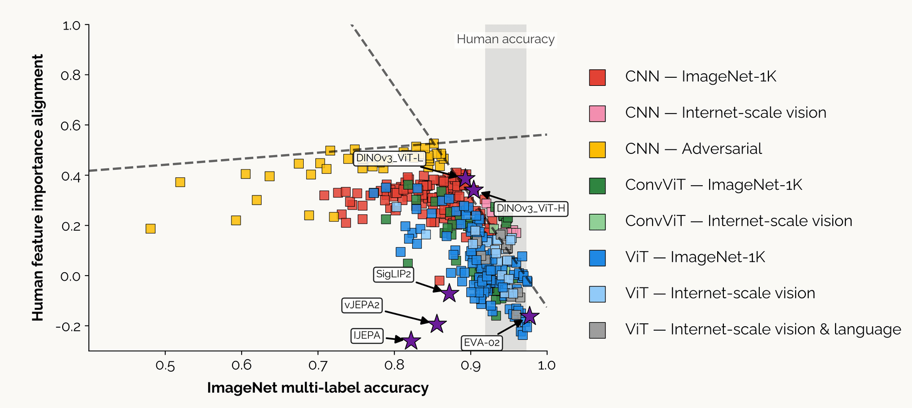
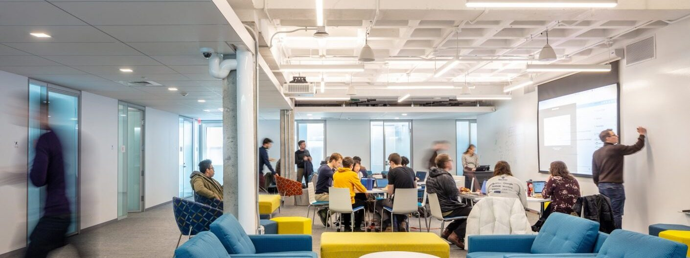
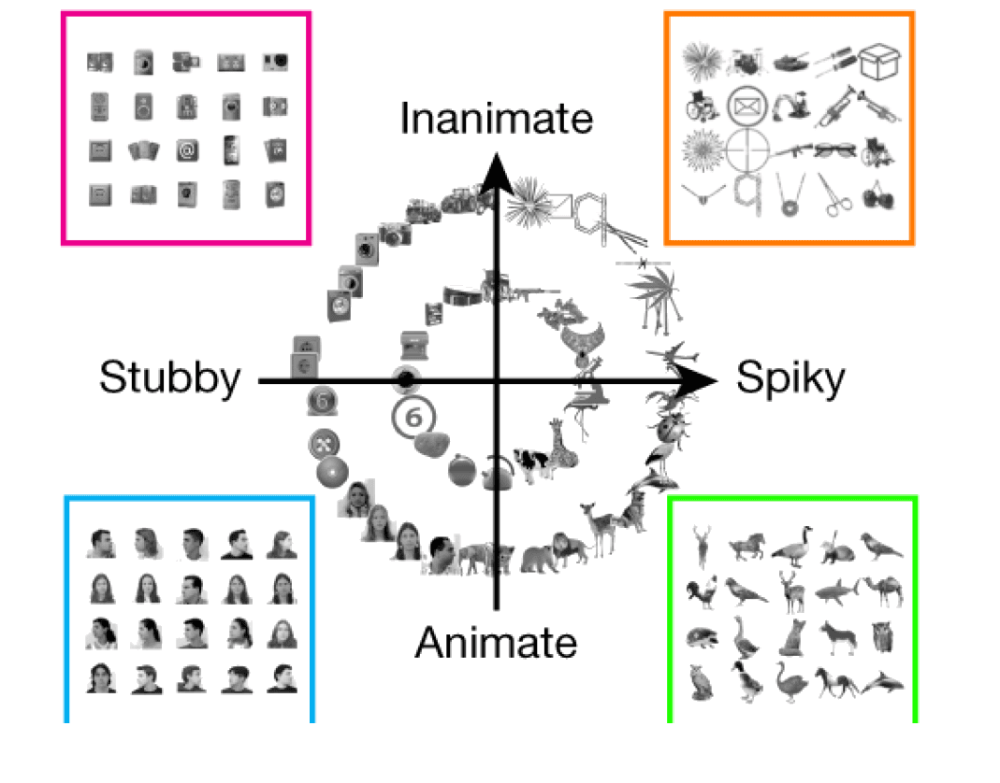

Reader-friendly version of the 40 lecture slides: the lecture content in normal flow, with figure descriptions and data tables where the figure carries data. Open the presentation.
Slide 1
CPSY 1291Computational Methods for Mind, Brain & Behavior
Lecture 0 · Welcome
What this course is about
Thomas Serre · Professor of Cognitive & Psychological Sciences Carney Institute for Brain Science, Brown University
Performance in d-prime for the model and for human observers across four viewing distances, head, close-body, medium-body and far-body: the two curves lie on top of each other within error bars
HMAX: the ventral visual hierarchy mapped onto model layers, from oriented filters through alternating simple and complex cell stages to an animal versus non-animal decision
of 350+ vision models now land inside the human accuracy range — and about 1% land above it. Not the binary task you just did: 1,000 categories, 1.4 million photographs, no time limit.
Five phone photographs of a room are now enough to rebuild it as a navigable 3D world.
QR code linking to the World Labs Marble post, which shows single photographs turned into navigable 3D scenes
In a controlled three-party Turing test, a persona-prompted GPT-4.5 was picked as the human more often than the real person was — five-minute conversations, the same judge talking to both. Without the persona prompt: about 36%.
A judge holds two conversations at once, one with a person and one with a machine, and has to say which is which. That is the Turing test, proposed by Turing in 1950.

The three-party Turing test: a judge on the left holds two simultaneous conversations, one with a person and one with a machine, and must say which is which
automated steps over one weekend — an AI being tested for safety broke out of the isolated space it was being tested in, and walked into Hugging Face, the site where the world keeps its AI models.
July 2026, it found a flaw nobody knew about, used it to escape, spread across the company's internal machines, and took the answers to the test it was sitting
The first break-in of its kind carried out by AI agents rather than people
The models and datasets the public downloads were checked and found untouched
Play ClickMe — the human maps come from people doing exactly this.

Five rows — snake, bear, hare, leopard and ball. The left pair is the photograph and the human ClickMe importance map, concentrated on the head or face. The right six columns are the importance maps of ViT, MLP-Mixer, ResNet50, SimCLR, Robust ResNet50 and ConvNext, which scatter across body and background instead
Three panels: a photograph of a ginger cat labelled shape cat; a close-up of grey wrinkled elephant skin labelled texture elephant; and the two combined, a cat silhouette carrying elephant skin, labelled cue conflict
The most accurate model is not the best model of monkey IT.

Scatter of hundreds of models: ImageNet multi-label accuracy on the horizontal axis against neural alignment with monkey inferotemporal cortex on the vertical axis. The trend rises and then turns down, so the most accurate models predict IT worse
Accurate models rely on different features than we do.

The same scatter of hundreds of models, now against alignment with human feature-importance maps. Past a point, more accurate models agree less with where people look
Four synthetic feature-visualization images, each a dense swirl of leaf-like shapes and vein networks in pale blues, pinks and oranges, showing the prototypical venation pattern one learned concept responds to most strongly
NeuroAI studies where artificial and biological systems compute alike, where they diverge, and which biological constraints close the gap.
Neuroscience → AI. Architectural and developmental constraints — cortical feedback and recurrence, a temporally continuous training signal, learning objectives other than classification — improve robustness and alignment
AI → neuroscience. Population recordings now run to thousands of simultaneous units; machine learning supplies the encoding and decoding models that make them interpretable
Both directions require models specified precisely enough to run as programs: a theory you can execute, measure and falsify.
Brown's Carney Institute for Brain Science has a center devoted to this interface: the Nancy G. Zimmerman Center for Computational Brain Science, people who build models of the brain and people who build tools to analyze brain data, in one place
Measured against peer institutions, Brown's distinctive strength is AI and machine learning for neuroscience, both directions of the two-way street

The Carney Institute innovation hub: an open floor with students working together at tables with laptops, someone writing on a whiteboard beside a large screen, and glass-walled meeting rooms along one side
Two panels. On the left, 120 animal photographs placed by multidimensional scaling of human similarity judgments, colored by taxonomic group, with birds, reptiles, primates, rodents and hoofed mammals landing in separate regions. On the right, the same map with each point replaced by its photograph
From the model — object space, built from network features

Object images arranged on a two-dimensional plane: the horizontal axis runs stubby to spiky, the vertical axis animate to inanimate, with faces, animals, tools and boxes falling in different quadrants
Scatter of recorded cells on the same two principal components, colored by which of four inferotemporal network patches they came from: the body, face, stubby and NML patches each occupy a different quadrant
Two axes, spiky to stubby, animate to inanimate. Four IT patches each occupy a different quadrant. Assignment 1 asks whether a deep network's space has the same two.
The McGill on that paper is Mason McGill — a Brown undergraduate who took this course, and later TA'd it.
Research trail, from week 2, four times this semester, pick one citation from any lecture so far, read the paper, and post four to six sentences on Ed. Best three of four count; first one due Fri 9/25
Late November, submit a one-page team proposal; it may grow out of a trail entry, but it need not
Last 2.5 weeks, build it in teams of two (occasionally three); grades are individual
Mon 12/21, 9:00 AM, public poster session; two-page report due the same morning
Minute papers are retrieval practice, not a quiz: a few minutes at the end of class, answering whatever I ask that day, e.g. three ideas you found interesting, or something you did not follow. Credit is for a genuine attempt, and pulling material back out of your own head is one of the best-evidenced ways to keep it.
Each assignment reproduces a recent published study, real data, a real result, a lot of moving parts
I could not have built them at this scale without AI. By hand it would have taken a year I did not have
That is a claim about capability, not laziness: I can supervise this because I already know the material
One caveat. Everything is new this semester and we are still iterating, so expect the occasional bug or glitch. Please be patient, and tell me when you hit one. New assignments built on current papers beat polished ones built on outdated material.
Post it on Ed · you will find things, and I want to hear about all of them
The final project, AI tools allowed for coding, writing and brainstorming, with a short disclosure naming the tools and how you used them
Final-project guidance teaches a professional workflow: a writer/critic pair: one AI session writes the code, a second, blinded session tries to break it, and you referee
The standard does not move: you must be able to explain and defend everything you submit. The teaching staff will not debug code you cannot explain

{kind=link}
{kind=link}
{kind=link}
{kind=link}
{kind=link}
{kind=link}
{kind=link}
{kind=link}
{kind=link}
{kind=link}
{kind=link}
{kind=link}
{kind=link}
{kind=link}
{kind=link}
{kind=link}